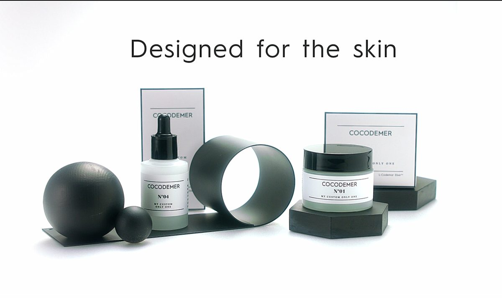
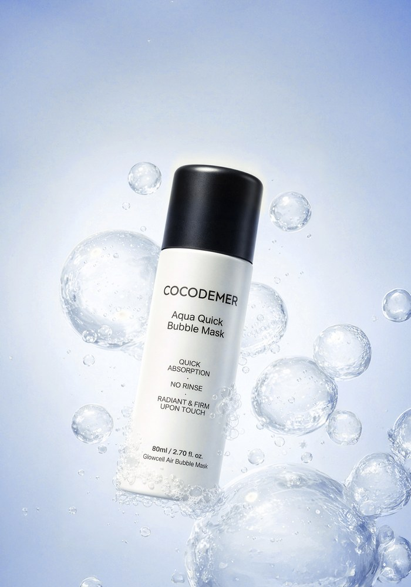
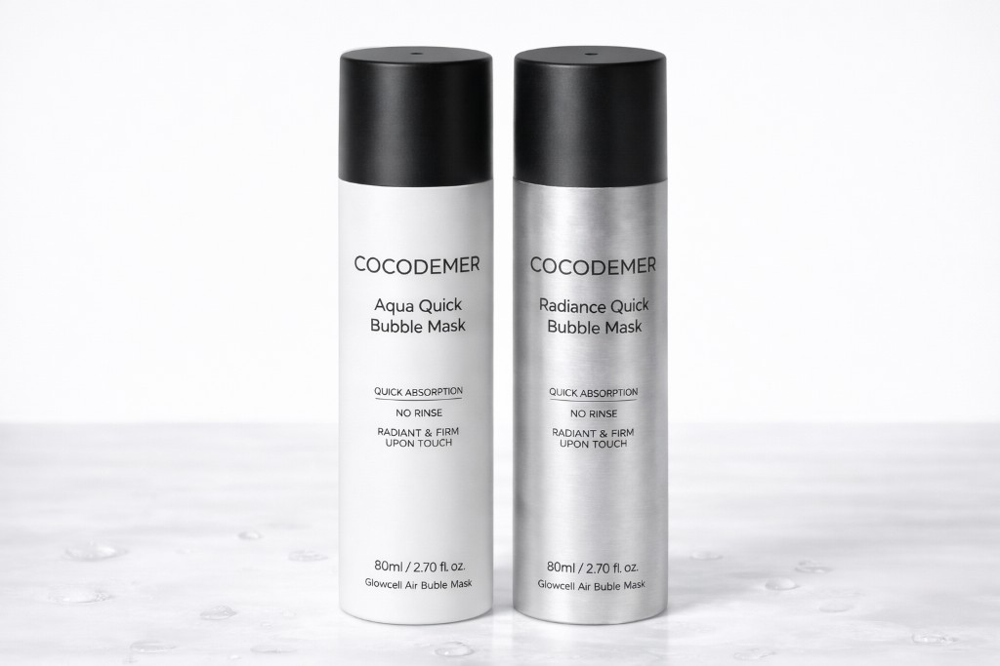
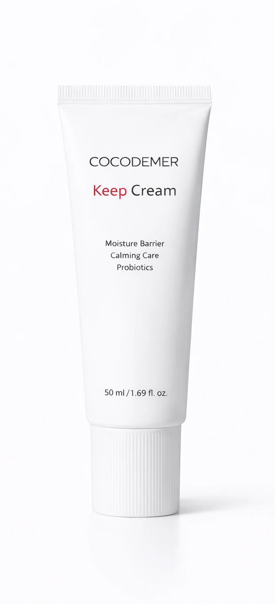
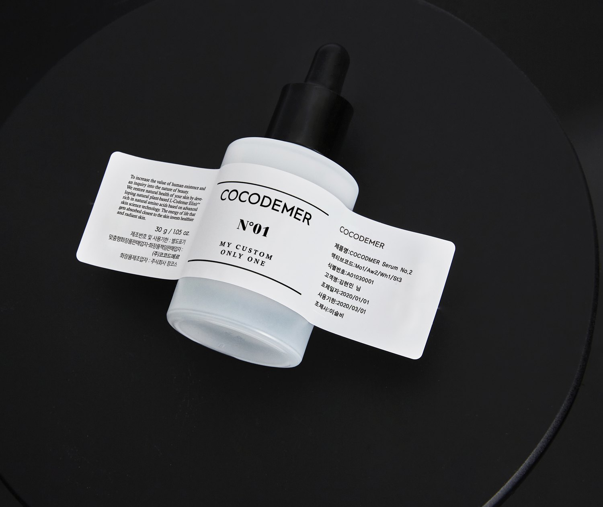
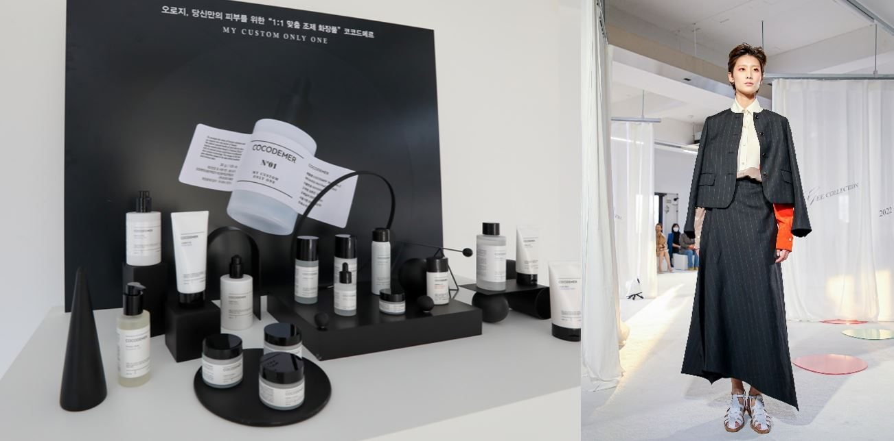

COCODEMER
品牌影片
記錄 COCODEMER
投入客製調配化妝品那段歲月的影片。

播放影片
為肌膚而設計
在推薦產品之前，
我們先看肌膚。

先為肌膚做好準備，
迎接下一個步驟。
相關技術Antipol-HiP™ · VelvetiPeel™

為準備好的肌膚
補充所需。
相關技術Air-in System™

讓達到的良好狀態
維持下去。
相關技術Keep System™
COCODEMER 從這個問題開始。
在推薦產品之前，我們先看肌膚，
並在門市測量肌膚狀態。
根據測量結果，
為每位顧客調配不同的精華液與乳霜。
一個月後再次檢視肌膚，
不會只是照原配方重做一次。
我們目前已不再提供顧客個別調配服務。
過去累積的經驗，如今成為我們打造產品的方式：
將肌膚保養分為三個階段來設計。

過往系列現在的產品，
以及即將推出的 COCODEMER 系列。
記錄 COCODEMER
投入客製調配化妝品那段歲月的影片。

COCODEMER 參與
2022 S/S Miss Gee Collection 時裝秀的紀錄。
